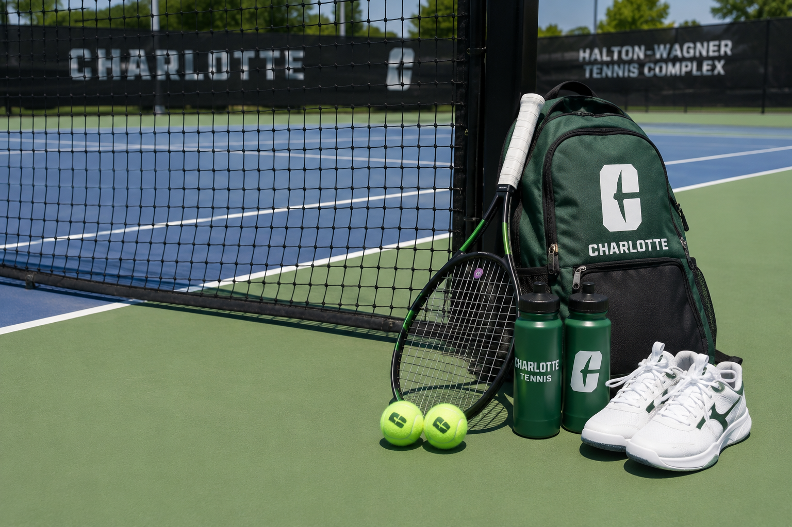
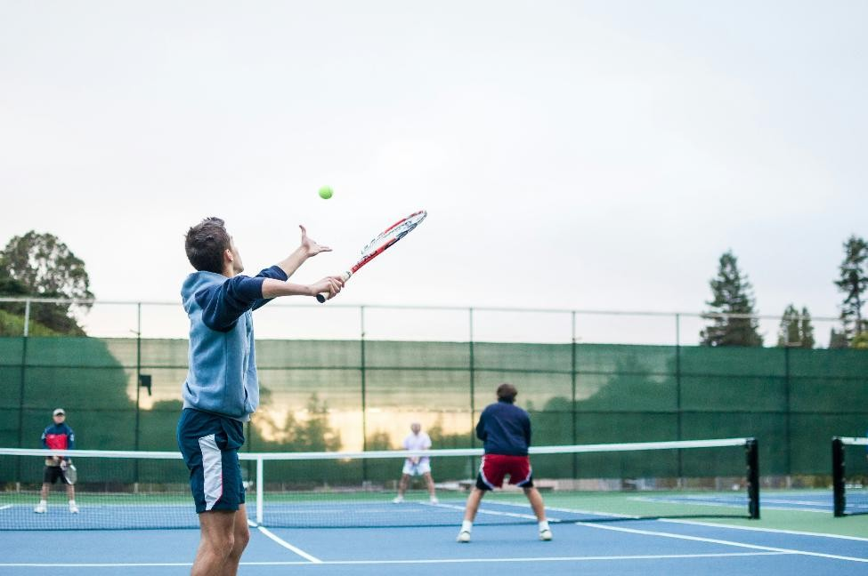

Home
Tennis is a very fun and competitive sport, and I love to play this in my freetime. Tennis is easy to learn for beginners and it is a nice way to be physically active and hang out with friends.
This sport is suitable to play for people of all ages and it can fit into your schedule through getting the required equipment, having some practice sessions and holding matches with the people who practice with you.

"Tennis uses the language of life. Advantage, service, fault, break, love – the basic elements of tennis are those of everyday existence because every match is a life in miniature." - Andre Agassi
About Me
I first played tennis with my brothers at the apartment's tennis courts. Later, I attended a tennis practice club with my peers at elementary school. I got interested in this sport and continue to play it for exercise and improving myself.
Today, I play tennis with my brothers & peers, and I plan to join the tennis club at the university to connect with students interested in this sport, and learn about any tennis competitions that are happening.

Best Times & Seasons
Tennis is usually in the daytime or in the evening, when there is enough lighting. It is important to play under good and safe weather. I play tennis in the evening time since it helps me relax and move around a bit after a long day of work.
The professional tennis season happens from January to November. Major tournaments are spread out through the year and players would play at indoor courts during colder weather.

Professional Tennis Tournaments
| Tournament | City | Season (months played) |
|---|---|---|
| Australian Open | Melbourne | mid-to-late January |
| French Open | Paris | late May to early June |
| Wimbledon | London | late June to early July |
| US Open | New York | late August to early September |
Best Locations
Tennis courts are the best places to play and practice this hobby. According to research, there are over 250,000 courts available across the nation.
In Charlotte, an available location to play tennis for university students is the Halton-Wagner Tennis Complex. Students and staff have access to the tennis courts and can play here anytime they wish. They can connect with the tennis club at the university if they are interested in finding friends to play with and practice regularly.
There are two types of tennis courts, public parks and indoor clubs.
Public Parks Available at Charlotte
- Tennis Courts at Mallard Creek Community Park - has outdoor lighting for evening play
- Winchester Tennis Courts - has a big court and smaller court to play singles or doubles matches
Indoor Clubs For Tennis
- Prosperity Athletic Club - has 10 outdoor clay tennis courts

AI Prompt used: "Create a photorealistic image of the Halton-Wagner Tennis Complex at UNC Charlotte filled with tennis players at each court."
How to Prepare
Starting tennis, and getting better at it, requires patience and regular practice. To start playing tennis, you would need to...
- Get the required equipment: this involves a lightweight racket, tennis balls, and a comfortable pair of shoes.
- Go to a tennis court near you
- Start some tennis drills for practice
- Connect with tennis players who regularly go the same tennis court as you, and play together

AI Prompt used: Create a photorealistic image of the tennis equipment, such as a tennis racket, tennis balls, and a pair of shoes. Show them near the tennis net in the backpack. Include two water bottles near the tennis racket.
Important Movements to Practice
- Shots: Forehand and backhand shots are important to hit the ball to the other side of the court and respond to the opponent during the match. We can practice these by hitting the tennis ball towards the wall and responding with a forehand or backhand based on how the ball bounces back. If playing with a teammate, you both can practice scoring shots by choosing one player to hit in a straight direction and the other player to hit towards the diagonal side opposite to them.
- Aim: Aiming the shot is necessary to direct the ball at the intended region, and not hit a foul shot. This can be done by attempting to hit the ball towards a target on the other side of the net (like a small cone).
- Footwork: Tennis requires constant movement on the court to precisely hit the ball. To achieve this, the right footwork helps you respond faster and hit the ball on time. You can practice footwork by marking four points on your side of the court and run towards each place to score. This practice along with other tennis drills will help you practice footwork effectively, since this skill is regularly used for playing the match.
Why Tennis?
I love to play tennis because I feel refreshed when playing it. Tennis is good for the player's health and I am also able to socialize with my friends. Playing tennis helps me stay motivated at the end of the day and improve my individual well-being.
Health Benefits of Tennis
- Cardiovascular Health: Playing in a tennis rally impacts heart health by reducing blood pressure.
- Cognitive Fitness: Players would be able to think tactically and make split-second decisions effectively.
- Muscle Strength: Constant movement improves the core and legs' strength, and swinging the racket helps strengthen the arms and shoulders.

Sources
I used AI to create the JavaScript portion of the page. I asked for code about creating a page with sections that dynamically switches in the same page, and modified the code to match the needs of this webpage.
AI Prompt used: When developing the webpage, I plan to create separate sections and set the 'Home' section show up as the default page. The remaining sections should be links on top of the page and the webpage should switch across them when clicked. How can I implement this mechanism with Javascript?
The images for the sections "Home", "About Me", "Best Times & Seasons", and "Why Tennis?" were obtained using the Unsplash platform, an open source collection of photos and videos.
For the "Best Locations" and "How to Prepare" sections, I used AI to generate the images.
AI Prompts Used
AI Prompt used: "Create a photorealistic image of the Halton-Wagner Tennis Complex at UNC Charlotte filled with tennis players at each court."
AI Prompt used: Create a photorealistic image of the tennis equipment, such as a tennis racket, tennis balls, and a pair of shoes. Show them near the tennis net in the backpack. Include two water bottles near the tennis racket.